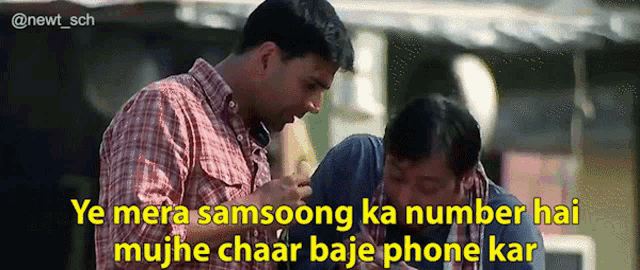
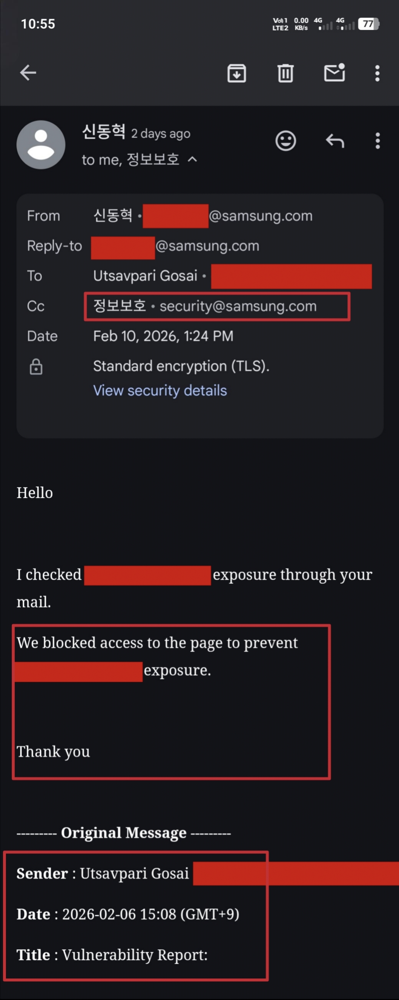

Hello Hackers 👋,

I hope you are all doing well and continuing to secure the digital landscape 🔐🌍
Today, I would like to share my experience of getting acknowledged by Samsung so let’s get started!
🐞 The Vulnerability

I discovered an information disclosure vulnerability that was revealing sensitive information related to a WordPress application.
Information disclosure issues can expose important configuration details, internal paths, or other sensitive data that attackers could misuse if not properly secured.
🛠 Tools & Tips
If you're testing WordPress applications, you can use tools like:
- 🔎 WPScan
- 📂 Dirsearch (with a WordPress-specific wordlist from SecLists)
By using proper wordlists and analyzing findings carefully, you may discover interesting issues. However, always remember:
- Analyze the vulnerability properly
- Confirm its real-world impact
- Report it responsibly
📩 Reporting to Samsung
Samsung does not currently have a dedicated public bug bounty program specifically for website or application security.
Their primary security focus is on Mobile OS security and Samsung TV software
security through:
https://securityreport.samsung.com/
For website or application vulnerabilities, they provide an email address:
📧 security@samsung.com
So I responsibly reported the issue via email with proper documentation and proof of concept.
🏆 The Response

After two days, I received a response confirming that:
- ✅ The issue had been fixed
- 🏅 I was officially acknowledged for reporting it
It was a great experience and a strong reminder that responsible disclosure truly matters in the cybersecurity community.
Final Thought:
Keep learning, keep testing, and never ignore small misconfigurations.
Even minor issues can lead to major security risks.
Thank You,
MR. X FACTOR 🚀
🔗 Handles:
- Linktree: https://linktr.ee/mrxfact0r_99